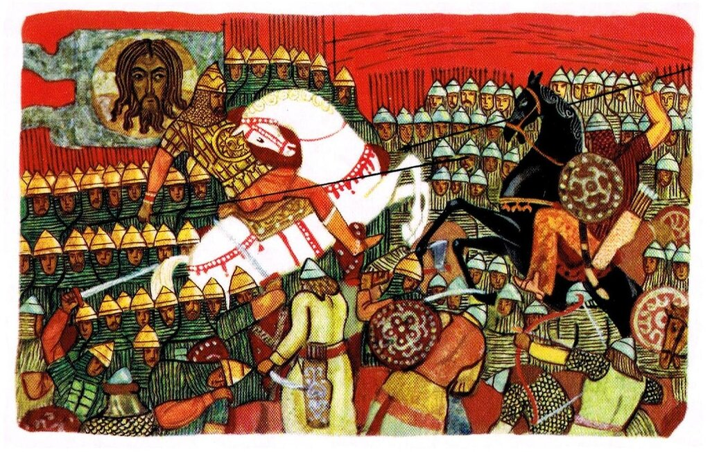

Слово о полку Игореве. Поэтическое искусство автора

Поэтическое искусство и патриотизм автора «Слова» являются отличительными чертами этого
уникального художественного произведения.
Поэтическое искусство автора «Слова» проявляется в применении им звуковых повторов, т. е. созвучий, или в начале, или в середине, или в конце слов, Повторение созвучных согласных называется аллитерацией, Boт примеры её: «в пяток потопташа поганые полки половецкие» (аллитерация па начальную согласную n); «се ли створнсте моей сребреней сеяние (на с) Умелым применением аллитераций автор искусно передаёт шум например, зловещие завывания ночи передаются наслоением свистящих и шипящих звуков (с, з, ш, щ)
Патриотизм автора «Слова» нашёл своё выражение в языке поэмы. Его речь обнаруживает живое отношение поэта к событиям. Автор горюет, что столько бед обрушилось на Русь, он порицает и обличает князей, но всегда прославляет мощь русского народа и героизм его вождей и воинов.
Свои чувства автор «Слова» выражает при помощи разных приёмов и средств языка. К ним относятся приём обращения к князьям и слушателям, характерные для ораторской речи вопросы, вроде: «что (это) шумит, что звенит вдалеке рано перед зарёю?» , восклицания: «А Игорева храброго войска уже не воскресить!» , широко применяемые монологи3. Автор стремится создать у слушателей нужное ему настроение. Вот он говорит о выступлении Игоря в поход и подбором слов, всем описанием старается передать предчувствие неудачи, ожидающей русских (вой волков, возбуждающий ужас, клёкот орлов, созывающий зверей на трупы, лай лисиц, звериный свист, скрип телег половецких, напоминающий крик распуганных лебедей) . Описывая битву, автор средствами языка старается передать гром мечей, треск копий, клики половцев, стон земли.
Так как оценка явлений жизни совпадает у автора с народной, то в «Слове» особенно ясно ощущается связь с устной народной поэзией. Так, среди эпитетов больше встречается народнопоэтических, чем книжно-литературных.
К первым относятся: серый волк, сизый орёл, чёрный ворон, борзый конь, чистое поле, синее море и др. К литературным: серебряная седина, жемчужная душа и др.
Наряду с точными эпитетами широко применяются метафорические: железные путы — и железные полки; золотой шлем — и золотое слово, копья булатные — и копья живые и т. п.
Как подлинный народный поэт древнего времени, автор «Слова» олицетворяет отвлечённые понятия, представляет их как бы живыми существами. Так, например, сказав о разгроме русских полков половцами, автор рисует такую картину: «Завопила Карна, и скорбная Жля поскакала по Русской земле, раскидывая огни в пламенном роге» . Карна — от слова карити — оплакивать умерших; Жля — от слова жалеть — жальница, плакальщица по мёртвым. Обида олицетворяется в виде девы, которая плещет лебедиными крыльями.
Широко применяются метафоры, отражающие отношение автора к рассказываемому. Они пронизывают всю поэму от её начала и до конца. Развёрнутой метафорой пользуется автор, говоря об искусстве Бояна: «Тогда пускал десять соколов на стадо лебедей... » Про Игоря говорится, что он «укрепил свой ум, заострил сердце мужеством» . Ещё примеры метафор: «Ночь стонала грозою» , «Печаль обильно потекла среди Русской земли» и т. п.
В «Слове» много народно-поэтических символических картин. Начиная описание битвы, автор даёт такую символическую картину: «Чёрные тучи с моря идут, хотят прикрыть четыре солнца» . Чёрные тучи — половцы, четыре солнца — четыре русских князя. Самая битва даётся в символических картинах то посева, то свадебного пира, то молотьбы. При помощи этих картин проводится идея защиты мирного труда.
Широко применяются образы, характерные для народной поэзии и в то же время отражающие быт, типичный для жизни феодальной Руси. Так, например, часто встречается образ сокола, любимой охотничьей птицы феодалов. Игру Бояна на гуслях автор сравнивает с соколиной охотой. Но в народном творчестве сокол чаще всего — символ героя. Автор называет соколами и Игоря, и Мстиславичей, и Святослава. Ворон — символ грубой, хищной силы: «Ни тебе, чёрный ворон, поганый половчанин! » С кукушкой — символом тоски — сравнивается Ярославна, тоскующая о муже.